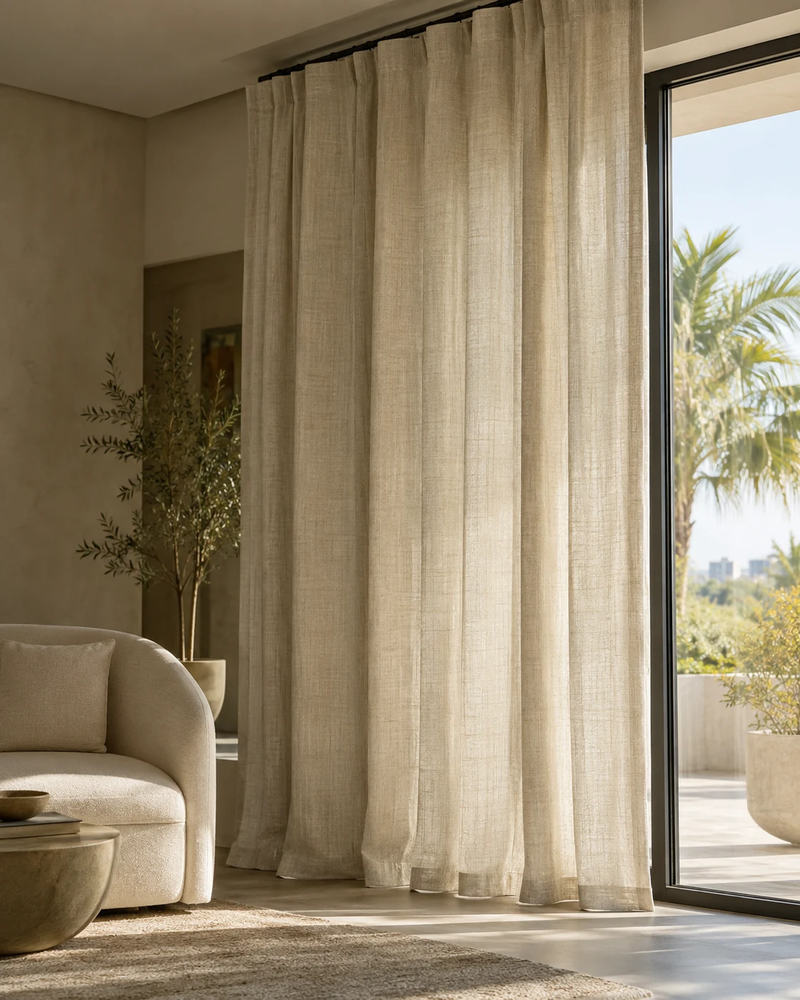

Curtains & blinds advice
Questions, answered.
Choices made simpler.
Clear answers about measuring, materials, light control, care and motorised window solutions.
01Do you provide free measuring and installation?
Yes. ZEYA provides professional measurement and installation as part of our curtain and blind solutions.
02Can I get a quote from a photo?
Yes. A photo with approximate window dimensions can help us provide a rough estimate. The final price is confirmed after measuring the window and selecting the fabric, style and hardware.
03Which is more affordable: curtains or roller blinds?
It depends on the size and specification. Basic roller blinds can be a cost-effective option, while made-to-measure curtains may cost more depending on the fabric, fullness, sewing and track system.
04Are blackout curtains more expensive than sheer curtains?
Not necessarily. The price depends on the fabric quality, lining, size and curtain system. Blackout lining can affect the overall cost.
05Why choose two layers of curtains?
A sheer and main curtain provide greater flexibility. The sheer allows natural light and daytime privacy, while the main curtain provides additional privacy, light control and insulation.
06Are curtains and blinds soundproof?
Curtains and blinds are not completely soundproof, but certain fabrics can help absorb and reduce noise. Heavier and denser fabrics generally provide better noise reduction.
07Can curtains and blinds help reduce electricity consumption?
They can help reduce heat entering through windows, which may reduce the workload on your air conditioner. Actual savings depend on the window, glass, fabric, sunlight exposure and installation.
08Do blackout curtains or blinds make a room completely dark?
Blackout fabric blocks light through the fabric, but light can still enter around the sides, top and bottom. Correct sizing and installation can help achieve maximum darkness.
09What is the difference between blackout and dim-out?
Blackout fabrics block most light passing through the fabric, while dim-out fabrics reduce light but allow some light through. The final level of darkness also depends on gaps around the window.
10How do I clean roller blinds?
Regularly remove dust with a soft cloth, microfibre duster or suitable vacuum attachment. Small marks can usually be gently wiped with a slightly damp cloth. Avoid harsh chemicals and excessive water.
11How often should curtains be cleaned?
For normal residential use, we generally recommend professional cleaning approximately twice a year. More frequent cleaning may be needed in dusty or high-use environments.
12Will curtains fade in sunlight?
Prolonged direct sunlight can cause fading over time. Using a sheer curtain can help reduce direct sunlight reaching the main curtain and help protect the fabric and colour.
13Can curtains help keep a room cooler?
Yes. Certain heavier, lined or coated fabrics can help reduce solar heat entering through windows. However, they cannot completely prevent heat from entering.
14Can you make curtains for large or unusual windows?
Yes. We can assess the window and recommend suitable fabric, tracks, hardware and operating systems for large, curved or unusually shaped windows.
15Do you offer flexible curtain tracks?
Yes. We offer flexible curtain tracks that can be customised for curved, bay and uniquely shaped windows.
16Can flexible curtain tracks be motorised?
Yes. Motorised options are available for selected flexible track systems, depending on the window design and track requirements.
17Can you provide double curtain tracks?
Yes. Double-track systems are available for combining sheers and blackout or main curtains.
18Can I use curtains and blinds in the same room?
Yes. Combining blinds and curtains can provide greater flexibility for light control, privacy and insulation, while creating a layered interior look.
19Can we use our existing curtain tracks?
Yes. In many cases, we can use your existing curtain tracks, provided they are suitable and in good condition. We can assess them before installation.
20Do you offer motorised curtains and blinds?
Yes. Motorised options are available for selected systems and are particularly useful for large, high or hard-to-reach windows.
21Can motorised curtains and blinds be automated?
Depending on the system, they can be operated using a remote, wall switch, smartphone or compatible smart-home system. Features depend on the selected motor and control system.
22Can I see samples before ordering?
Yes. We recommend viewing physical samples to check the actual colour, texture, thickness, transparency and finish before making your final selection.
23Why is professional measurement important?
Accurate measurement helps ensure the correct fabric quantity, finished curtain dimensions, track or rod length, blind size, mounting position and operating clearance. It also helps identify installation limitations before ordering.
24Are curtains better than blinds?
Neither is universally better. The right choice depends on light control, privacy, style, maintenance, window type and budget. We can recommend a suitable option based on your space.
25How do I choose the right curtain or blind?
We consider sunlight, heat, privacy, desired darkness, window size, interior style, maintenance, operation and budget before recommending a suitable solution.
26What curtains or blinds are suitable for bedrooms?
For bedrooms, we commonly recommend blackout curtains, blackout blinds or layered curtains, depending on the desired level of darkness, privacy and window type.
27What curtains or blinds are suitable for living rooms?
Living rooms can benefit from sheers, layered curtains, blinds or a combination of curtains and blinds, depending on sunlight, privacy and interior design.